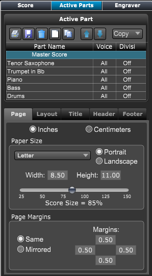

Score Layout Panel - Active Parts Panel
Score Layout Panel - Active Parts Panel
If the Score Layout panel is not showing click on the Layout button at top right of Control Bar or type "Shift-L" to open the panel.
Then choose the Active Parts panel.
The Active Parts Panel is where you set the layout and appearance of your master score and each active part.

|
Active Parts - allows you to choose the Master Score or individual part to edit/
- Buttons - Buttons for printing saving, deleting, creating, and adding instruments to score parts.
- Copy - Uses this pop-up menu to copy current parts settings to all parts.
Parts Table - allows you to choose the Master Score or individual part to edit
- A list of each score part - Click to select the part to be edited. Double click the name to change part name and track names.
- Voice - Click to choose what voices are included on the selected part.
- Divisi - If on, split chords/voices into individual parts. Double click to set how chord and voices are included.
Layout Tabs - allows you to choose the area of the score to edit.
- Page - The basic setting for paper size, score scaling, etc..
- Layout - Score layout such as systems per page, bars per system, bar number positions, etc.
- Title - The title, copyright, instructions, and composer text at top center of page.
- Header - Header text at top left and right of page.
- Footer - Footer text at bottom of page
Paper Size
- Portrait, Landscape - Sets the orientation of the paper.
- Choose paper size - Sets paper width and height.
- Score Size slider - Use this to get more elements onto the page.
Page Margins - allows you to choose the margins for all pages.
- Same - Each page will have the same margins.
- Mirrored - Mirrored margins are normally used in printing manuals. Normally there is a larger margin on the side nearest to the binding.
|